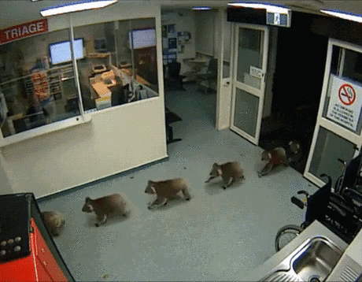
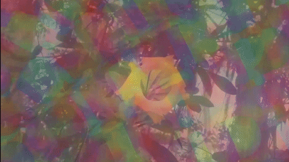
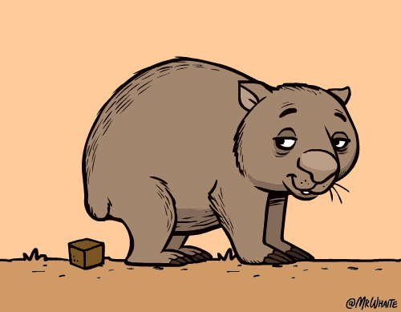
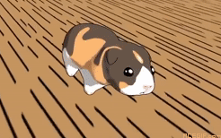
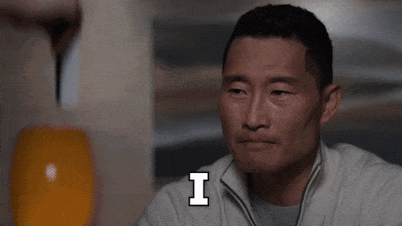

Топ 5 смешных фактов из жизни!
- У коал настолько уникальные отпечатки лап, что их почти невозможно отличить от человеческих. Если бы коала решила ограбить банк, криминалисты были бы в замешательстве! 
- Куры, как и люди, видят сны! Когда они спят, у них есть фаза быстрого сна, во время которой они, вероятно, мечтают о гигантских зернышках или побеге от хозяина.
- Если пчела наткнется на забродивший нектар, она может опьянеть и начать вести себя странно: летать зигзагами или даже забыть, как найти дорогу домой. Другие пчелы могут даже не пустить ее обратно в улей, чтобы она не устроила там "вечеринку". 
- Вомбаты — единственные животные, которые какают "кубиками". Это помогает им метить территорию, чтобы "кубики" не скатывались с камней и деревьев. Настоящие инженеры природы! 
- В Швейцарии запрещено держать одну морскую свинку – потому что они социальные животные, и одиночество может сделать их грустными. Им официально нужен друг! 

Обзор сериала "Хороший доктор"
Если ты любишь медицинские драмы, но хочешь чего-то свежего и эмоционального, то «Хороший доктор» (The Good Doctor) – отличный выбор!
О чём сериал?
Главный герой – Шон Мерфи (Фредди Хаймор), молодой хирург с аутизмом и синдромом саванта. Он обладает гениальными медицинскими способностями, но испытывает трудности в общении с коллегами и пациентами. Несмотря на скептицизм окружающих, он пытается доказать, что достоин работать в лучшей больнице Калифорнии.
| Плюсы | Минусы |
|---|---|
| Сильная эмоциональная история – сериал не только про медицину, но и про личностный рост, дружбу и любовь. | Иногда слишком драматично – некоторые сцены давят на эмоции и могут показаться чересчур трагичными. |
| Гениальный главный герой – Шон Мерфи не только талантливый хирург, но и уникальный персонаж с особенным мировосприятием. | Не всегда реалистично – некоторые медицинские случаи выглядят слишком кинематографично. |
| Отличная актёрская игра – Фредди Хаймор великолепно передаёт сложный характер Шона. | Некоторые персонажи раздражают – в сериале есть врачи, которым сложно сопереживать. |
| Интересные медицинские случаи – необычные диагнозы, сложные операции и нестандартные решения. | Есть сцены с кровью – не всем приятно смотреть подробности операций. |
| Хороший баланс между медициной и личной драмой – не только про больницу, но и про отношения. | Некоторые сезоны слабее других – сюжет временами провисает. |
Цитаты из романа Джорджа Оруэлла "1984"
Роман рассказывает о том, как в 1984 году после войн и различных кризисов образовалось три сверхдержавы: Океания, Евразия и Остазия — постоянно воюющие друг с другом. В романе Орулла доминантой восприятия общества как антиутопического является тоталитарный контроль партии и государства над личностью.
Война — это мир, свобода — это рабство, незнание — сила. |
Власть — не средство; она — цель. Диктатуру учреждают не для того, чтобы охранять революцию; революцию совершают для того, чтобы установить диктатуру. Цель репрессий — репрессии. Цель пытки — пытка. Цель власти — власть. |
Если вам нужен образ будущего, вообразите сапог, топчущий лицо человека — вечно. И помните, что это — навечно. Лицо для растаптывания всегда найдется. Всегда найдется еретик, враг общества, для того чтобы его снова и снова побеждали и унижали. |
Массы никогда не восстают сами по себе и никогда не восстают только потому, что они угнетены. Больше того, они даже не сознают, что угнетены, пока им не дали возможности сравнивать. |
В массе своей люди слабы и трусливы, не готовы к свободе и боятся правды, а значит, надо, чтобы кто-то сильный управлял ими и обманывал их. |
Если ты в меньшинстве — и даже в единственном числе, — это не значит, что ты безумен. Есть правда и есть неправда, и, если ты держишься правды, пусть наперекор всему свету, ты не безумен. |
Расписание матчей АПЛ "Манчестер Сити"
| Матч | Дата | Место | Счет |
|---|---|---|---|
| «Манчестер Сити» — «Ньюкасл Юнайтед» | 15 февраля 2025 | Стадион: «Этихад», Манчестер | 4:0 |
| «Манчестер Сити» — «Ливерпуль» | 23 февраля 2025 | Стадион: «Этихад», Манчестер | Неизвестен |
| «Тоттенхэм» — «Манчестер Сити» | 26 февраля 2025 | Стадион: «Тоттенхэм Хотспур», Лондон | Неизвестен |
| «Ноттингем Форест» — «Манчестер Сити» | 8 марта 2025 | Стадион: «Сити Граунд», Ноттингем | Неизвестен |
| «Манчестер Сити» — «Брайтон энд Хоув Альбион» | 15 марта 2025 | Стадион: «Этихад», Манчестер | Неизвестен |